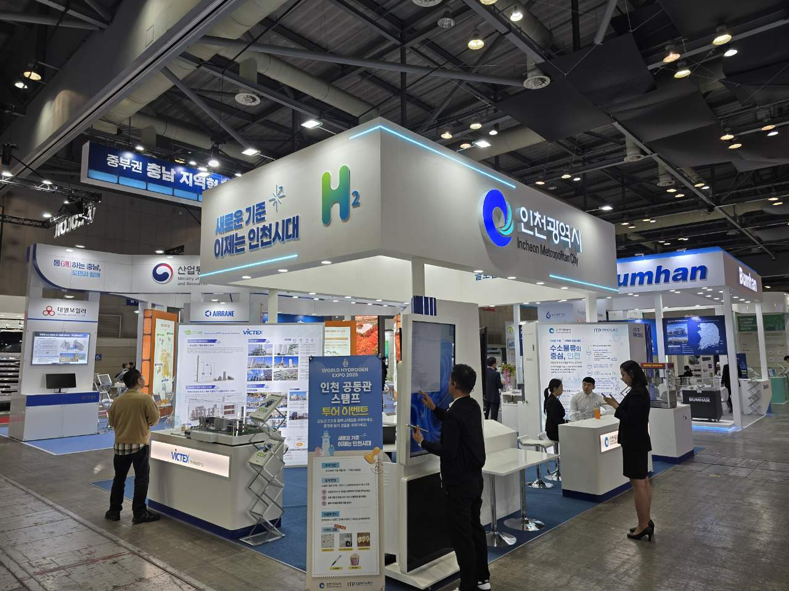

수소버스 600대 도시 인천, 아시아 최대 수소 전시회에 공동관
인천 기업 3곳 참가…12개국 197개사 전시회
연료 공급처 SK인천석유화학은 11월 19일까지 대정비
12개국 197개사 전시회에 인천 기업 셋
AI경제저널=김갑봉 기자 | 인천시가 4일부터 6일까지 경기 고양 킨텍스 제2전시장에서 열린 「World Hydrogen Expo 2026」에 인천공동관을 냈다. 인천테크노파크와 함께 지역 수소기업 3곳이 나갔다.
전시회는 12개국 197개사가 참가한 아시아권 최대 규모의 수소산업 전시회·콘퍼런스다. 대한무역투자진흥공사(KOTRA)와 킨텍스가 주관했고 수소 생산·저장·운송·활용 기술 전시와 국제 콘퍼런스, 비즈니스 상담회가 함께 열렸다.

인천그린에너지㈜는 수소 생산과 수소충전소 구축·운영·유지보수 사업을, 대지오토모티브㈜는 수소연료전지 부품과 매연저감장치를 선보였다. ㈜빅텍스는 이산화탄소 포집·활용(CCU) 설비와 드라이아이스 제조설비를 내놓았다. 시는 참가기업의 1대1 바이어 상담을 돕겠다고 밝혔다.
수소버스 넷에 하나, 연료 공장은 대정비 중
인천은 수소버스를 많이 굴리는 도시다. 인천시가 9월 28일 밝힌 바로는 시내·광역버스 약 2500대 가운데 수소버스가 약 600대로 넷에 하나꼴이다.
그 연료를 대는 국내 최대 액화수소생산시설인 SK인천석유화학은 10월 6일부터 11월 19일까지 45일 동안 정기 대정비를 하고 있다. 시는 대체 충전소로 수요를 나누고, 일부 수소버스 노선은 배차간격이 길어질 수 있다고 알렸다. 전시회 사흘은 이 대정비 기간 한가운데에 있었다.
충전소 16곳, 울산과 공급망 협력
인천시는 올해 2월 수소충전소 16곳을 운영해 7대 특·광역시 가운데 수소 기반시설이 가장 많다고 밝혔다. 16번째인 인천공항 제2여객터미널 액화수소충전소는 하루 대형 수소버스 최대 200대를 충전할 수 있고 국비 70억원, 시비 30억원, 민간 42억9000만원이 들었다.
인천시는 10월 30일 울산시와 수소·액화천연가스(LNG) 산업 상생협력 협약을 맺고 수소 공급망 확보와 충전시설 확충에 함께 나서기로 했다. 공급처 한 곳의 대정비가 버스 배차에 바로 닿는 짜임이어서, 공급처를 넓히는 일은 지역 수소기업의 판로와 함께 인천 수소정책의 숙제로 남는다.
참고문헌
- 인천광역시 신재생에너지과(2026.11.4). 「인천시, ‘World Hydrogen Expo 2026’ 참가, 수소산업 생태계 알린다」. https://www.incheon.go.kr/IC010205/view?repSeq=DOM_0000000015886619
- 인천광역시(2026.9.28). 「인천시, 액화수소생산시설 대정비 대비 수소버스 운행 차질 최소화」. https://www.incheon.go.kr/IC010205/view?repSeq=DOM_0000000015637827
- 인천광역시(2026.10.30). 「인천시-울산시, 수소·액화천연가스(LNG) 산업 상생협력 맞손」. https://www.incheon.go.kr/IC010205/view?repSeq=DOM_0000000015865002
- 인천광역시(2026.2.25). 「인천시, 제9차 수소산업위원회 개최…‘인천형 수소산업 생태계’구체화」. https://www.incheon.go.kr/IC010205/view?repSeq=DOM_0000000014228164
- 인천광역시(2026.1.29). 「인천시, 인천공항 수소교통 복합기지 준공…액화수소충전소 본격 운영」. https://www.incheon.go.kr/IC010205/view?repSeq=DOM_0000000014057264
[사진 출처]
- [사진1] 인천광역시 보도자료 「인천시, ‘World Hydrogen Expo 2026’ 참가, 수소산업 생태계 알린다」 붙임 사진, 공공누리 출처표시, 2026.11.4., https://www.incheon.go.kr/IC010205/view?repSeq=DOM_0000000015886619
관련기사
- 인천 로봇기업 8곳 "현장 같은 시험장 달라"…로봇랜드 테스트베드 밑그림
- 송도서 19일 제약바이오투자대전…투자자·바이어 20곳과 기업 50곳 1대1 상담
- 인천 중소기업인대상에 수성밸브공업 이광균 대표…우수기업 73곳 선정
저작권자 © AI경제저널 무단전재 및 재배포, AI학습 및 활용 금지